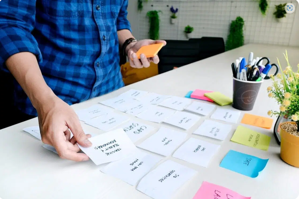

Doble Diamante
Doble Diamante fue creado en 2004 por el Design Council del Reino Unido.
Es proceso innovador de diseño, cuyo gran atractivo, en buena medida, radica en que puede emplearse tanto por diseñadores expertos como por personas que no se dedican al diseño.
Este modelo pretende ayudarle a las personas a resolver problemas complejos respondiendo a una diversidad de necesidades concretas.
El modelo surgió después de una serie de estudios especializados realizados por el Design Council. En estos, analizaron cómo solucionaban problemas complejos empresas enormes (estudiaron, por ejemplo, cómo trabajaba LEGO, Sony, etc.).
Al analizar cómo trabajaban algunas de las empresas más grandes y exitosas del mundo, descubrieron que, prácticamente, todas seguían determinados pasos o fases. Cada una llamaba a estas etapas de forma distinta, pero todas las empresas las empleaban. Así, el Design Council decidió articular un modelo que sintetizara lo que observó en sus estudios. El resultado fue el Doble diamante.
Se llama Doble Diamante porque el diagrama en el que se representa este modelo corresponde a la imagen de un par de figuras de diamante. Estas dos figuras se sitúan en el centro de un círculo y están estrechamente ligadas.
Este modelo se sustenta en cuatro pasos o fases: en las dos primeras se “inaugura” o define el problema a través de múltiples hipótesis e ideas asociativas; en las dos últimas se articula lo surgido en el “primer diamante”, se definen con claridad los puntos concretos con los que trabaremos y, sobre todo, se crea una solución final.
Estas cuatro fases se relacionan estrechamente con dos formas de pensamiento: pensamiento divergente y pensamiento convergente.
El pensamiento divergente corresponde a la primera parte de los diamantes. En esta fase se trabaja con asociaciones poco convencionales. Es la parte más "lúdica" y libremente creativa del proceso.
El pensamiento convergente corresponde a la segunda parte de los diamantes. En esta fase se trabaja con estricta lógica resolutiva de problemas. La creatividad sigue siendo fundamental, pero se sustenta en un orden diferente, mucho más enfocado en la concreción al resolver problemas. Ninguna de estas dos formas de pensamiento es más importante que la otra; ambas necesitan unirse para obtener buenos resultados en el modelo Doble Diamante.